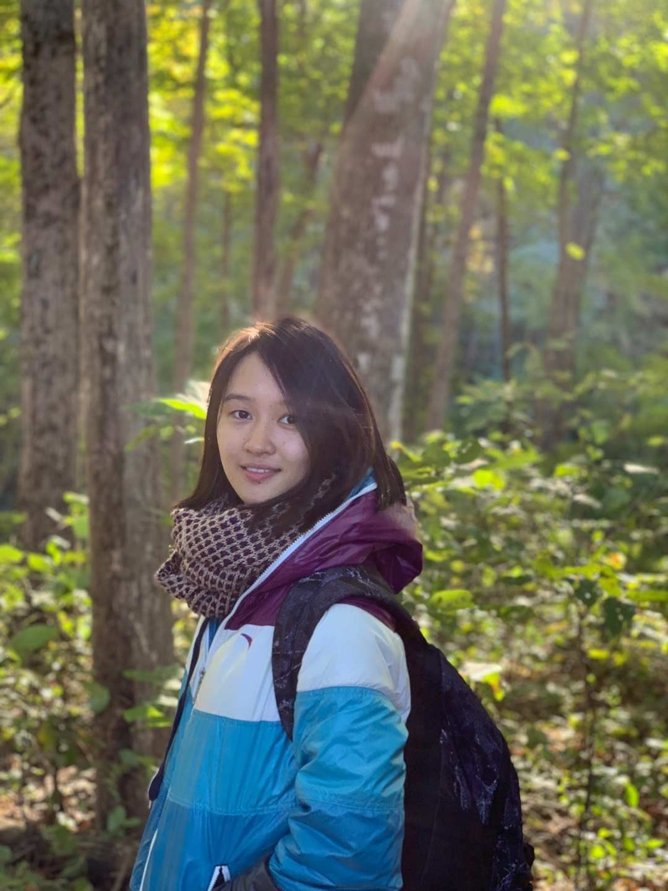
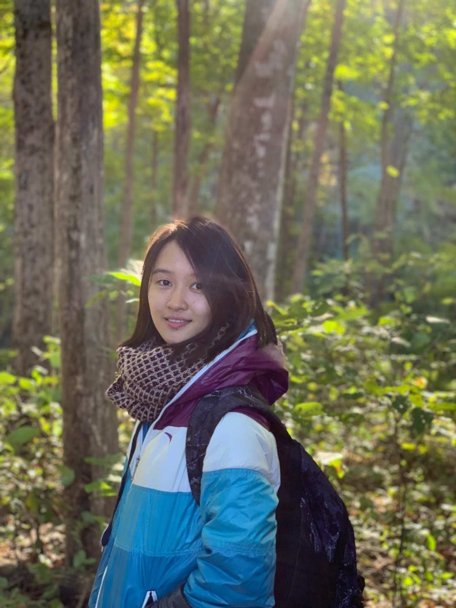

About Me
My name is Nannan Huang. I am from China. Currently, I live in St. Louis, Missouri.
I completed my undergraduate degree at Westminster College in Fulton, Missouri in 2015. I studied Elementary Education in the Education program. I graduated with a teaching certificate. After graduation, I became an educator. I have been a bilingual teacher for seven years at St. Louis Language Immersion School. As a teacher, I am eager to learn about new technology to support student success.
In 2021, I started to pursue my master's degree at the University of Missouri-Columbia. I am majoring in Learning Technology and Design. My goal of learning is to improve my ability of creating effective learning environments for all learners. I anticipate graduating in December 2023.
Outside my work, I enjoy traveling. I love to explore different cities and learn about different landmarks and cultures. Traveling around the world is my ultimate life goal!
Education Overview:
 
